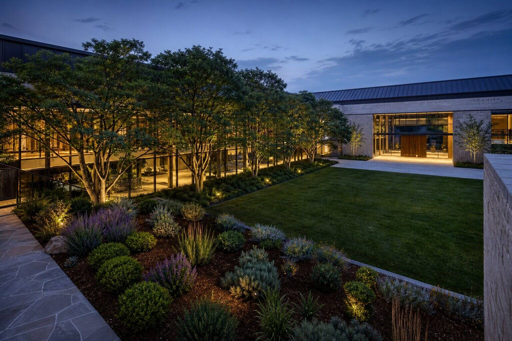

How should architects add vegetation with AI?
Treat vegetation as a masked local pass, not a global enhancement. Protect the building, paths and critical views; regenerate only defined planting zones; then compare the output with the source for species character, mature scale, silhouette, access and shadow. AI can supply density quickly. It cannot approve the planting plan.
The shrub looks terrific. It has also sealed the accessible entrance.
That miniature disaster sits inside a recurring request in this week's archviz workflow discussion: improve vegetation, lighting and texture while keeping the architecture intact. The request sounds like one task. It is several edits with different tolerances.
Vegetation deserves its own pass because it is unusually good at hiding mistakes. Leaves break silhouettes, shadows cross thresholds, and dense planting makes a thin mask error look pleasantly organic. The eye forgives the tree while the building quietly changes behind it.
Why should vegetation be isolated?
A global image-to-image pass gives the generator permission to reinterpret every pixel. That may be useful for a mood study. It is an expensive bargain when the building geometry is already approved and only the planting looks like green plastic cutlery.
Isolation narrows the instruction. The generator can work on canopy variety, ground cover and edge softness without renegotiating window spacing. The untouched base remains available for comparison, and a failed planting option can be discarded without rebuilding the entire image.
This is the same logic behind our global-pass, local-repair workflow, applied before damage occurs. Local work is easier to inspect because the change boundary is visible. It also makes authorship honest: the architecture came from the model; the planting treatment came from a generated edit.
What belongs inside the mask?
Mask the planting bed, canopy or lawn that needs work, then decide whether its cast shadow should be included. Keep façades, roof edges, doors, ramps, steps, signs and hardscape joints outside unless the edit explicitly requires overlap.

The official ComfyUI inpainting guide describes the basic pattern: load an image and mask, condition the model, sample, decode and save. Its guidance recommends expanding a mask slightly to improve blending. That is useful, but architectural masks need a second thought. Expansion toward sky is cheap. Expansion across a curtain wall is not.
Create separate masks when foreground planting crosses a building edge. One mask can regenerate the plant interior; a tighter edge mask can handle the contact zone at lower denoise. The extra pass is less glamorous than one-click abundance and considerably easier to defend.
| Zone | Permit | Protect |
|---|---|---|
| Foreground bed | Species mix, density, mulch texture | Kerbs, drains, path width |
| Facade edge | Leaf contour and small overlaps | Openings, eaves, cladding joints |
| Tree canopy | Branch rhythm, translucency, gaps | Building silhouette and key views |
| Lawn | Texture and restrained variation | Grades, paving boundary, furniture |
How much context does the model need?
A plant patch needs enough surrounding image to understand light, camera and scale. Crop too tightly and the model may invent a delightful bonsai where a mature tree belongs. Include a recognizable piece of façade, a door, a person or another scale reference, but keep those elements outside the editable mask.
If the crop is enlarged for sampling, return it through a recorded stitch process and inspect the seam at full resolution. A soft seam crossing foliage can disappear at first glance, then emerge as a halo on a brighter display. Our tile-seam QA applies here even when only one local crop was generated.
Keep the prompt botanical enough to be useful. Name growth habit, canopy density, season and maintenance character. Avoid stuffing five species into one clause unless the planting design actually calls for five species. The model's idea of biodiversity can resemble a garden centre after a small explosion.
What should be checked before the image leaves?
Begin with scale. Compare trunk diameter, canopy spread and plant height against modeled elements. A tree can be photorealistic and still be the wrong age by thirty years. If mature size matters to the design claim, the generated image needs to represent it or carry a clear illustration note.
Then check access. Trace paths, ramp clearances, door swings, sightlines and the pedestrian route from frame edge to entrance. Foliage should not turn a circulation diagram into hide-and-seek.
Check the building silhouette with a difference overlay. Look closely where branches meet eaves, parapets and glazing. Generators are fond of continuing organic texture through a hard edge, especially where the source has low contrast.
Finally, read light and shadow. Added foliage should agree with the scene's sun direction and softness. A new canopy casting no shadow floats. A generated shadow crossing from lawn onto wall at a different angle advertises the edit from across the room.
Which vegetation errors matter most?
Prioritize errors by the claim attached to the image. Species accuracy matters in a planting presentation. General habit and scale may be enough in an early atmosphere study. Fire access, visibility and circulation matter whenever the image is used to discuss planning or operations.
Record the purpose beside the output. Our design decision log provides a simple structure: what question the image answers, what changed, which source was used, and what remains illustrative. The method keeps a decorative pass from wandering into evidentiary territory.
Do not claim a named species from appearance alone. A generator can produce the visual stereotype of an olive tree without botanical consistency in leaf, bark or branching. If the image needs species-level authority, use verified assets or specialist review.
Can the pass stay reproducible?
Save the source render, mask, crop coordinates, model, seed, denoise, prompt, negative prompt and output at each accepted stage. The official ComfyUI examples use embedded workflow metadata so an image can reload its graph. Keep that metadata where delivery formats allow it, and retain the workflow JSON separately.
Version the mask. A revised façade paired with yesterday's planting mask can expose the old opening layout through a few transparent leaves. Filename discipline is dull until it prevents a shrub from restoring a deleted door.
Preserve one unedited source frame in the review sheet. A final image alone invites approval by atmosphere. A before-and-after pair exposes the actual intervention.
Planting should frame the architecture, not eat it
AI is good at the visual qualities that make digital vegetation feel less cloned: irregular spacing, varied translucency and a plausible mess at the edge of a bed. Give it that job.
Keep geometry, access and horticultural claims under explicit review. A local vegetation pass is fast because it limits the argument. The tree may be generated. The judgment cannot be.